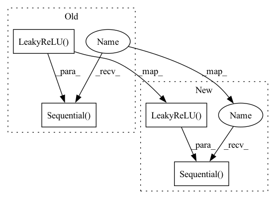

Pattern ID :29604

Before Change
nn.LeakyReLU(),
)
// stage 3
self.conv1d_up2_s2_2 = nn.Sequential(
nn.Conv1d(
in_channels=hidden_units[1], out_channels=hidden_units[1],
kernel_size=3, padding=1, stride=1,
),
nn.BatchNorm1d(hidden_units[1]),
nn.LeakyReLU(),
nn.Conv1d(
in_channels=hidden_units[1], out_channels=hidden_units[1],
kernel_size=3, padding=1, stride=1,
),
nn.BatchNorm1d(hidden_units[1]),
nn.LeakyReLU(),
nn.Conv1d(
in_channels=hidden_units[1], out_channels=hidden_units[2],
kernel_size=3, padding=1, stride=2,
),
nn.BatchNorm1d(hidden_units[2]),
nn.LeakyReLU(),
) // (bs, 2048, 90)
self.shortcut_2 = nn.Sequential(
nn.Conv1d(
After Change
nn.LeakyReLU(),
)
// stage 3
self.conv1d_up2_s2_2 = nn.Sequential(
// nn.Conv1d(
// in_channels=hidden_units[1], out_channels=hidden_units[1],
// kernel_size=3, padding=1, stride=1,
// ),
// nn.BatchNorm1d(hidden_units[1]),
// nn.LeakyReLU(),
// nn.Conv1d(
// in_channels=hidden_units[1], out_channels=hidden_units[1],
// kernel_size=3, padding=1, stride=1,
// ),
// nn.BatchNorm1d(hidden_units[1]),
// nn.LeakyReLU(),
nn.Conv1d(
in_channels=hidden_units[1], out_channels=hidden_units[2],
kernel_size=3, padding=1, stride=2,
),
nn.BatchNorm1d(hidden_units[2]),
nn.LeakyReLU(),
) // (bs, 2048, 90)
self.shortcut_2 = nn.Sequential(
nn.Conv1d(
In pattern: SUPERPATTERN
Frequency: 4
Non-data size: 4
Instances
Fragment ID: 87738459
Project Name: liaorongfan/deeppersonality
Commit Name: d49e1e53711bf204865de4fed8cb5478c48e192e
Time: 2022-06-04
Author: 15670381505@163.com
File Name: dpcv/modeling/networks/spectrum_model.py
M Class Name: SpectrumConv1D2
N Class Name: SpectrumConv1D2
M Method Name: __init__(5)
N Method Name: __init__(5)
M Parent Class: nn.Module
N Parent Class: nn.Module
M File Name: dpcv/modeling/networks/spectrum_model.py
N File Name: dpcv/modeling/networks/spectrum_model.py
M Start Line: 108
M End Line: 145
N Start Line: 108
N End Line: 129
'>
Before Change
class Discriminator(nn.Module):
def __init__(self, channels_img, features_d):
super(Discriminator, self).__init__()
self.disc = nn.Sequential(
// input: N x channels_img x 64 x 64
nn.Conv2d(
channels_img, features_d, kernel_size=4, stride=2, padding=1
),
nn.LeakyReLU(0.2),
// _block(in_channels, out_channels, kernel_size, stride, padding)
self._block(features_d, features_d * 2, 4, 2, 1),
self._block(features_d * 2, features_d * 4, 4, 2, 1),
self._block(features_d * 4, features_d * 8, 4, 2, 1),
// After all _block img output is 4x4 (Conv2d below makes into 1x1)
nn.Conv2d(features_d * 8, 1, kernel_size=4, stride=2, padding=0),
nn.Sigmoid(),
)
def _block(self, in_channels, out_channels, kernel_size, stride, padding):
return nn.Sequential(
nn.Conv2d(
After Change
class Discriminator(nn.Module):
def __init__(self, channels_img, features_d):
super(Discriminator, self).__init__()
self.disc = nn.Sequential(OrderedDict([
// input: N x channels_img x 64 x 64
("conv_in", nn.Conv2d(
channels_img, features_d, kernel_size=4, stride=2, padding=1
)),
("leaky_relu", nn.LeakyReLU(0.2)),
// _block(in_channels, out_channels, kernel_size, stride, padding)
("block1", self._block(features_d, features_d * 2, 4, 2, 1)),
("block2", self._block(features_d * 2, features_d * 4, 4, 2, 1)),
("block3", self._block(features_d * 4, features_d * 8, 4, 2, 1)),
// After all _block img output is 4x4 (Conv2d below makes into 1x1)
("conv_out", nn.Conv2d(features_d * 8, 1, kernel_size=4, stride=2, padding=0)),
("sigmoid", nn.Sigmoid()),
]))
def _block(self, in_channels, out_channels, kernel_size, stride, padding):
return nn.Sequential(OrderedDict([
("conv", nn.Conv2d(
'>
Fragment ID: 87738456
Project Name: ebartrum/lightning_gan_zoo
Commit Name: d0ec14e8cc60da7db50ea8e713b7b383c1d2a315
Time: 2021-01-15
Author: edward.bartrum@gmail.com
File Name: core/networks.py
M Class Name: Discriminator
N Class Name: Discriminator
M Method Name: __init__(3)
N Method Name: __init__(3)
M Parent Class: nn.Module
N Parent Class: nn.Module
M File Name: core/networks.py
N File Name: core/networks.py
M Start Line: 10
M End Line: 23
N Start Line: 11
N End Line: 24
'>
Before Change
)
self.features3 = nn.Linear(4, 4)
self.linear_relu1 = nn.Sequential(
nn.Linear(32*5*3 + 32*5*3 + 4, 128, bias=True),
nn.LeakyReLU()
)
self.classifier = nn.Sequential(
nn.Linear(128, 4),
// nn.Softmax(dim=-1)
After Change
)
// self.features3 = nn.Linear(4, 4)
self.linear_relu1 = nn.Sequential(
nn.Linear(32*7*7 + 32*7*7 + 4, 128),
nn.LeakyReLU(),
nn.Dropout(0.2),
nn.Linear(128, 128),
nn.LeakyReLU(),
nn.Dropout(0.2),
nn.Linear(128, 128),
nn.LeakyReLU()
)
self.classifier = nn.Sequential(
nn.Linear(128, 4),
// nn.Softmax(dim=-1)
'>
Fragment ID: 87738457
Project Name: suessmann/intelligent_traffic_lights
Commit Name: 24ea840ae82688fe7d105ef9c0a483f1cd52e1a4
Time: 2020-06-04
Author: ilyazisman@gmail.com
File Name: src/dqn.py
M Class Name: DQNetwork
N Class Name: DQNetwork
M Method Name: __init__(1)
N Method Name: __init__(1)
M Parent Class: nn.Module
N Parent Class: nn.Module
M File Name: src/dqn.py
N File Name: src/dqn.py
M Start Line: 19
M End Line: 30
N Start Line: 19
N End Line: 36
'>
Before Change
)
def _block(self, in_channels, out_channels, kernel_size, stride, padding):
return nn.Sequential(
nn.Conv2d(
in_channels,
out_channels,
kernel_size,
stride,
padding,
bias=False,
),
nn.BatchNorm2d(out_channels),
nn.LeakyReLU(0.2),
)
def forward(self, x):
return self.disc(x)
After Change
]))
def _block(self, in_channels, out_channels, kernel_size, stride, padding):
return nn.Sequential(OrderedDict([
("conv", nn.Conv2d(
in_channels,
out_channels,
kernel_size,
stride,
padding,
bias=False,
)),
("batch_norm", nn.BatchNorm2d(out_channels)),
("leaky_relu", nn.LeakyReLU(0.2)),
]))
def forward(self, x):
return self.disc(x)
'>
Fragment ID: 87738461
Project Name: ebartrum/lightning_gan_zoo
Commit Name: d0ec14e8cc60da7db50ea8e713b7b383c1d2a315
Time: 2021-01-15
Author: edward.bartrum@gmail.com
File Name: core/networks.py
M Class Name: Discriminator
N Class Name: Discriminator
M Method Name: _block(6)
N Method Name: _block(6)
M Parent Class: nn.Module
N Parent Class: nn.Module
M File Name: core/networks.py
N File Name: core/networks.py
M Start Line: 26
M End Line: 37
N Start Line: 27
N End Line: 38